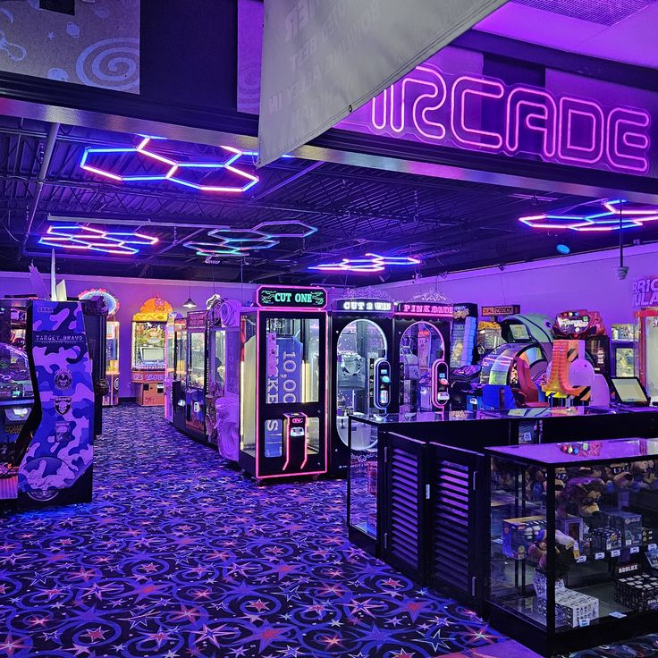
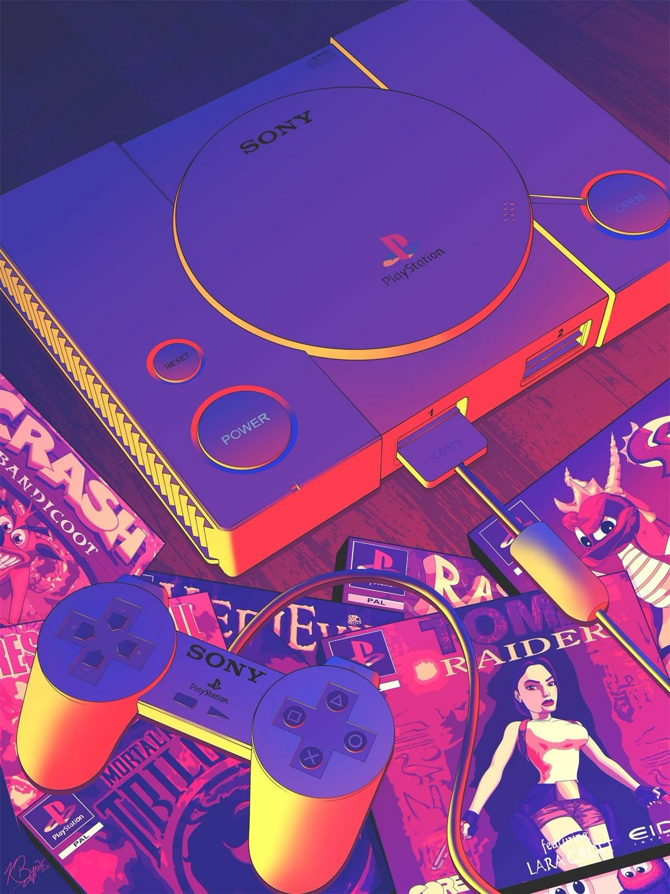
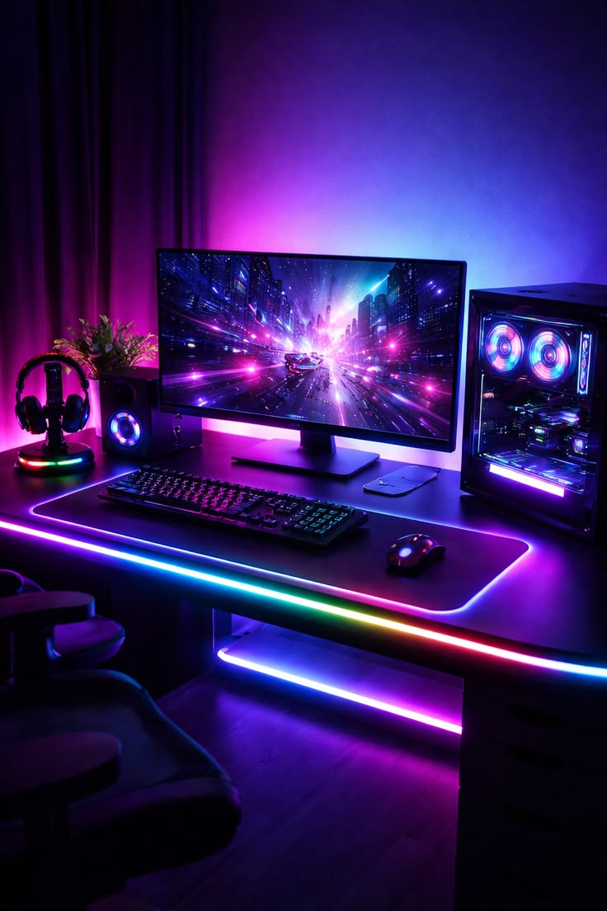

A EVOLUÇÃO DOS GAMES
História & Tecnologia
A jornada dos jogos eletrônicos transformou experimentos de laboratório em uma das indústrias de entretenimento mais lucrativas e artisticamente ricas do planeta. Venha explorar essa linha do tempo repleta de inovação, narrativas envolventes e avanços digitais marcantes.
Primeiros Passos
Do surgimento dos osciloscópios aos primeiros códigos de computador. Os primórdios representavam puro desafio de hardware matemático estruturado.
Arcades e Consoles
A consolidação do mercado de entretenimento físico e digital. Formas inovadoras de design de fases e as primeiras trilhas sonoras icônicas em 8-bits.
Novas Gerações
A chegada do fotorrealismo, motores gráficos complexos (Unreal/Unity), inteligência artificial adaptativa e jogos massivos online em tempo real.


